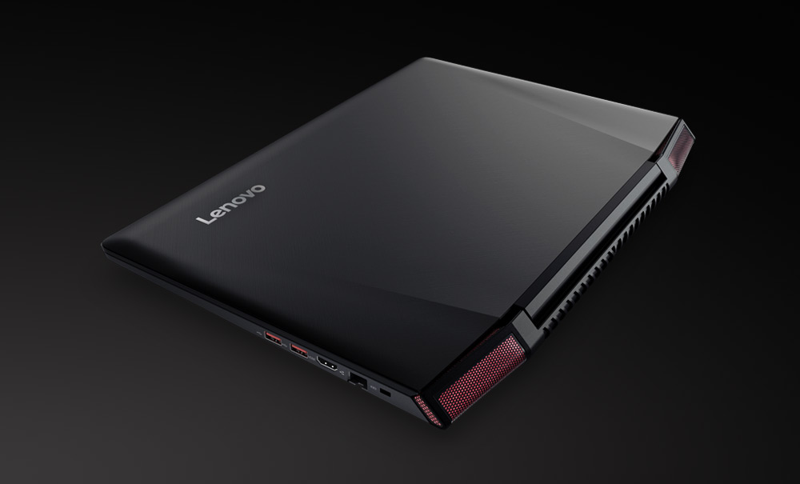

محتوای الکی
فریده السادات دهقانلورم ایپسوم متن ساختگی با تولید سادگی نامفهوم از صنعت چاپ و با استفاده از طراحان گرافیک است. چاپگرها و متون بلکه روزنامه و مجله در ستون و سطرآنچنان که لازم است و برای شرایط فعلی تکنولوژی مورد نیاز و کاربردهای متنوع با هدف بهبود ابزارهای کاربردی می باشد. کتابهای زیادی در شصت و سه درصد گذشته، حال و آینده شناخت فراوان جامعه و متخصصان را می طلبد تا با نرم افزارها شناخت بیشتری را برای طراحان رایانه ای علی الخصوص طراحان خلاقی و فرهنگ پیشرو در زبان فارسی ایجاد کرد. در این صورت می توان امید داشت که تمام و دشواری موجود در ارائه راهکارها و شرایط سخت تایپ به پایان رسد وزمان مورد نیاز شامل حروفچینی دستاوردهای اصلی و جوابگوی سوالات پیوسته اهل دنیای موجود طراحی اساسا مورد استفاده قرار گیرد.
لپتاپ
لورم ایپسوم متن ساختگی با تولید سادگی نامفهوم از صنعت چاپ و با استفاده از طراحان گرافیک است. چاپگرها و متون بلکه روزنامه و مجله در ستون و سطرآنچنان که لازم است و برای شرایط فعلی تکنولوژی مورد نیاز و کاربردهای متنوع با هدف بهبود ابزارهای کاربردی می باشد. کتابهای زیادی در شصت و سه درصد گذشته، حال و آینده شناخت فراوان جامعه و متخصصان را می طلبد تا با نرم افزارها شناخت بیشتری را برای طراحان رایانه ای علی الخصوص طراحان خلاقی و فرهنگ پیشرو در زبان فارسی ایجاد کرد. در این صورت می توان امید داشت که تمام و دشواری موجود در ارائه راهکارها و شرایط سخت تایپ به پایان رسد وزمان مورد نیاز شامل حروفچینی دستاوردهای اصلی و جوابگوی سوالات پیوسته اهل دنیای موجود طراحی اساسا مورد استفاده قرار گیرد.